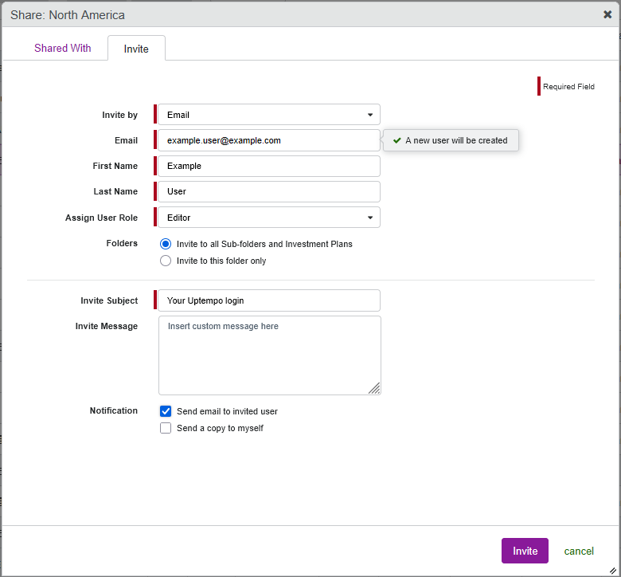
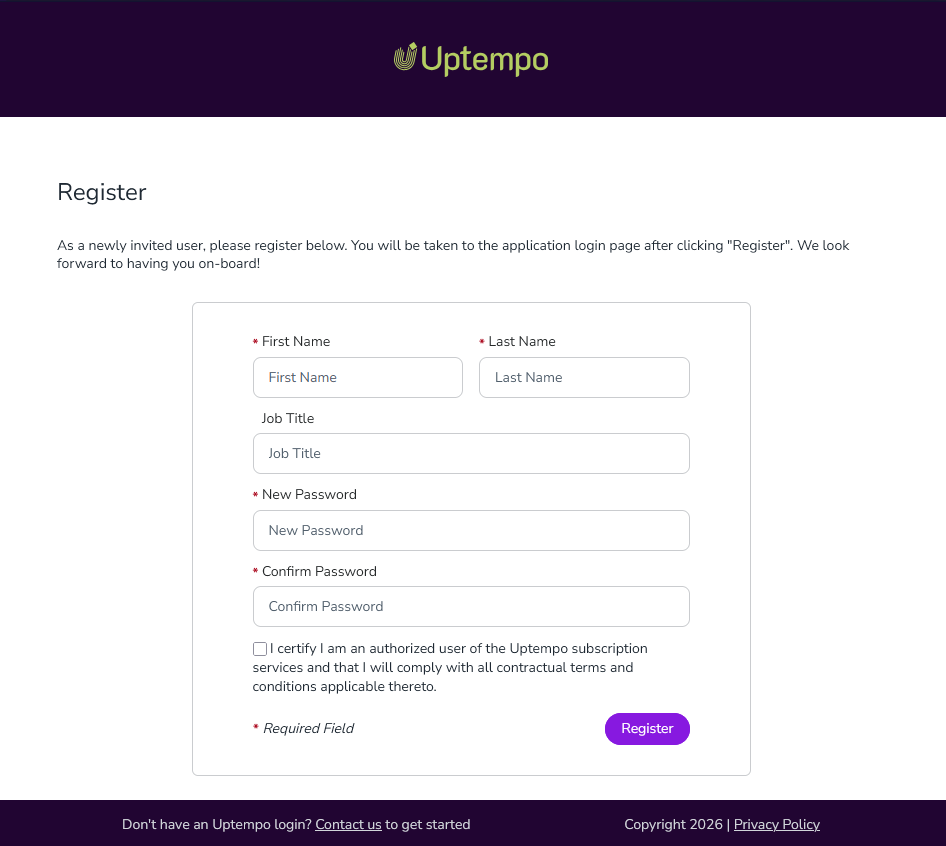
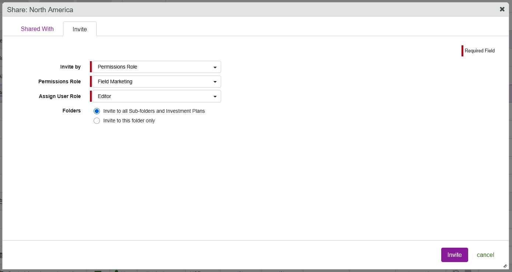
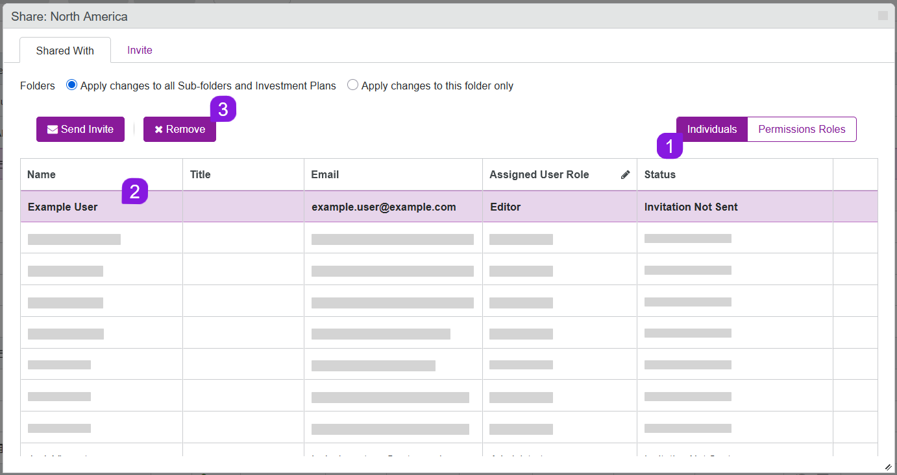
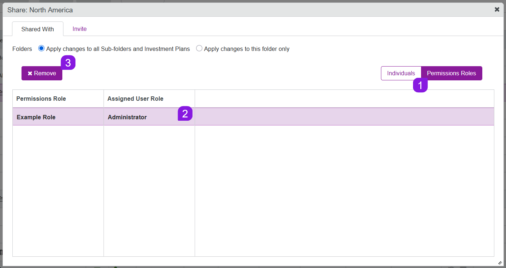

Manage user access to budgets (Preview)
In Uptempo Financial Management, users can only access budgets (folders, sub-folders, or investment plans) that they have been invited to. Administrators control which users can view or edit each budget, maintaining clear accountability across users in the instance.
Invite users to budgets
You can invite users to any budget folder, sub-folder, or investment plan either individually (all Uptempo versions), or as a group (Uptempo 1.0 only).
When you invite users, you also assign them a user role, which determines the permissions that they have within Uptempo Financial Management.
Before you begin
Before you can invite users to a budget, you must:
Create at least one permissions role for the Budget module (under Administration > Permissions).
Add the Module Access permission to each permissions role in the Budget module. Without this permission, invited users will not be able to access the
 Budgets or
Budgets or  Investments sections in your Uptempo instance.
Investments sections in your Uptempo instance.
Invite users to a budget individually
You can invite users to a budget individually, using their email address as an identifier:
If an email address does not exist in the Uptempo instance yet, inviting it creates a new user.
If an email address is already registered to an existing user in the instance, inviting it grants additional access to that user (for example, to another folder or investment plan).
When you invite a user, you can also choose to send them an email notification, optionally with a customizable message.
Invite an individual user to a budget
In the
Budgets section, find the budget (folder, sub-folder, or investment plan) that you want to invite a user to.On the selected budget, click invite under the Manage Users column. The Share: dialog opens to the Invite tab.
On the Invite tab, select Email in the Invite by menu.
Enter the user's email address into the Email field.
If the email address is not yet registered to an existing user in the Uptempo instance, enter the user's first and last name.

If a user with the email address already exists, the First Name and Last Name fields are not shown.
If the existing user already has access to this budget, a notification is displayed beside the Email field. You can enter another email address to invite a different user, or click cancel to close the Share: dialog.
Use the Assign User Role menu to select a user role for the selected budget.
The selected user role determines the invited user's access level and permissions.
To learn more about the available user roles, see User roles.
Optional: If you're inviting a user to a folder or sub-folder, they are also invited to all of its sub-folders and investment plans by default. To limit their access to only the selected folder or sub-folder, set the Folders setting to Invite to this folder only.
This setting is not displayed if you selected an investment plan.
Optional: Use the Invite Subject and Invite Message fields to customize the invitation email that is sent to the user.
Under Notification, select the Send email to invited user option.
Optional: To send yourself a copy of the invitation email, select the Send a copy to myself option under Notification.
To finish inviting the user to the selected budget, click Invite.

The invited user receives the specified access level to the selected budget with immediate effect, and the user is added to the table on the Shared With tab of the Share: dialog.
If you selected the Send email to invited user option, the user is sent the following email:
If you specified a custom message in the Invite Message field, your custom message is added to the email body just before the signature, under the following heading:
When the invited user clicks the registration link in the email, they are taken to the registration form, where they can enter their name and set their password:


If an individually invited user did not receive the invitation email, or if the link in their invitation email expired before they could use it, you can resend their invitation email at any time.
Resend an invitation email to a user
In the
Budgets section, find the budget (folder, sub-folder, or investment plan) that you invited the user to.On the selected budget, click edit under the Manage Users column. The Share: dialog opens to the Shared With tab.
Select Individuals to view the table of users individually invited to the selected budget.
In the table, select the user to whom you want to resend the invitation email.
Click Send Invite.
In the confirmation dialog, click Yes to finish resending the invitation email.
The invitation email is sent. If the user had not previously been sent an invitation email, their status is also changed to Invitation Sent.
Invite users to budgets as a group
Instead of inviting users to budgets individually, you can invite a permissions role. When you invite a permissions role, all users assigned to that role (under Administration > Permissions > Budget) are invited and granted the specified access together.
When you invite a permissions role to a budget, you can add or remove individual users to or from the permissions role to control their access to the budget:
Adding a user to a permissions role also grants that user access to all budgets the permissions role is invited to
Removing a user from a permissions role also removes that user's access to all budgets the permissions role is invited to (unless the user was also individually invited to a budget in addition to their access through the permissions role)
Invite a permissions role to a budget
In the
Budgets section, find the budget (folder, sub-folder, or investment plan) that you want to invite the users to.On the selected budget, click invite under the Manage Users column. The Share: dialog opens to the Invite tab.
On the Invite tab, select Permissions Role in the Invite by menu:

Use the Permissions Role menu to select the permissions role that contains the users you want to invite.
All users with the permissions role receive access to the budget.
Use the Assign User Role menu to select a user role for the selected budget.
All users with the invited permissions role receive the permissions to the budget specified by the assigned user role.
To learn more about the available user roles, see User roles.
Optional: If you're inviting a permissions group to a folder or sub-folder, all of its sub-folders and investment plans are also automatically included in the invitation. To limit access to only the selected folder or sub-folder, set the Folders setting to Invite to this folder only.
To finish inviting the permissions role to the selected budget, click Invite.

All users in the invited permissions role receive the specified access to the selected budget with immediate effect. The permissions role is added to the table on the Shared With tab of the Share: dialog.
Remove users from budgets
You can remove users from specific budget folders, sub-folders, or investment plans at any time. Removing a user from a given budget does not affect their access to other parts of the budget hierarchy that they are invited to.
Remove an individually invited user from a budget
If you invited a user to a budget individually (using their email address), you can also remove them individually.
Remove an individual user from a budget
In the
Budgets section, find the budget (folder, sub-folder, or investment plan) that you want to remove the user from.On the selected budget, click edit under the Manage Users column. The Share: dialog opens to the Shared With tab.
Select Individuals to view the table of users individually invited to the selected budget.
In the table, select the user you want to remove from the budget. The selected user's row in the table is highlighted.
Optional: If you're removing a user from a folder or sub-folder, they are also removed from all of its sub-folders and investment plans by default. To remove them from only the selected folder or sub-folder, set the Folders setting to Apply changes to this folder only.
This setting is not displayed if you selected an investment plan.
Click Remove:

To finish removing the selected user from the budget, click Yes in the confirmation dialog.

The user is removed from the selected folder, sub-folder, or investment plan with immediate effect.
Remove an invited permissions role from a budget
If you invited a permissions role to a budget, you can remove the permissions role from the budget at any time. This also removes access to the budget from all users who currently have the permissions role.
Remove a permissions role from a budget
In the
Budgets section, find the budget (folder, sub-folder, or investment plan) that you want to remove the permissions role from.On the selected budget, click edit under the Manage Users column. The Share: dialog opens to the Shared With tab.
Select Permissions Roles to view the table of permissions roles invited to the selected budget.
In the table, select the permissions role you want to remove from the budget. The selected permissions role's row in the table is highlighted.
Optional: If you're removing a permissions role from a folder or sub-folder, all of its sub-folders and investment plans are also automatically included. To remove the permissions role from only the selected folder or sub-folder, set the Folders setting to Apply changes to this folder only.
This setting is not displayed if you selected an investment plan.
Click Remove:

To finish removing the selected permissions role from the budget, click Yes in the confirmation dialog.

The permissions role is removed from the selected folder, sub-folder, or investment plan with immediate effect.